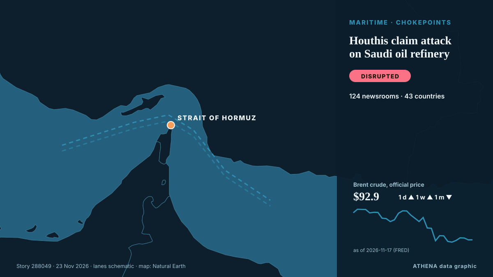

Géopolitique, politique et sécurité
SponsoriséPrésenté par  Cybernetics and Artificial Intelligence Lab Welcome to the Cybernetics and Artificial Intelligence Laboratory, established at the Department of Business Administration of the National and Kapodistrian University of Athens. The lab is headed by Professor Dimitrios Thomakos. The lab aims to do research that can be published in top venues. Our research uses tools and methods of Artificial Intelligence, and lies in the following areas: - Forecasting - Decision making - Cyber security - Finance We are always looking forward to collaborating with exceptional students!
Cybernetics and Artificial Intelligence Lab Welcome to the Cybernetics and Artificial Intelligence Laboratory, established at the Department of Business Administration of the National and Kapodistrian University of Athens. The lab is headed by Professor Dimitrios Thomakos. The lab aims to do research that can be published in top venues. Our research uses tools and methods of Artificial Intelligence, and lies in the following areas: - Forecasting - Decision making - Cyber security - Finance We are always looking forward to collaborating with exceptional students!
Les titres sont affichés en anglais, tels que publiés.

Guerres et conflitsHouthis claim attack on Saudi oil refinery
Yemen’s Iran-backed Houthi rebels have claimed to have attacked a major oil refinery on Saudi Arabia’s Red Sea coast. de Daily Mirror
| 10 nov. | 287 |
|---|---|
| 11 nov. | 261 |
| 12 nov. | 265 |
| 13 nov. | 223 |
| 14 nov. | 180 |
| 15 nov. | 199 |
| 16 nov. | 272 |
| 17 nov. | 258 |
| 18 nov. | 245 |
| 19 nov. | 254 |
| 20 nov. | 221 |
| 21 nov. | 156 |
| 22 nov. | 133 |
| 23 nov. | 71 |
Marcos pushes back on Trump’s claim of exclusive US food buys
President Ferdinand R. Marcos Jr. said the Philippines would not rely exclusively on US food and energy imports under the proposed trade deal between the two… de Daily Tribune
Zelenskyy Says Ukraine Sank Russian Warship, Cargo Vessel off Libya
Ukrainian president says seven Ukrainian-made naval drones destroyed the Russian corvette Merkury and a weapons-transporting cargo ship in an operation off Benghazi, extending Kyiv's maritime… de Kurdistan24 (English)
Cyprus expels two Russian diplomats over suspected espionage – Politico
Two Russian diplomats suspected of espionage have been expelled from Cyprus. de Ukrinform (English)
Netanyahu and Eisenkot parties resume talks to form Israel government
Former deputy governor tells Central Banking prime minister’s proposals are ‘stupid’ and ‘crazy’ de Central Banking
Ukraine sank Russian corvette Merkury off Libya: Zelenskyy
A Russian Navy guided-missile corvette – assessed to be the Project 20380 Steregushchiy-class warship Merkury – has been engulfed in flames following an explosion in the Libyan port of Benghazi… de Kyiv Post
Libya’s military says ‘fully prepared’ after Benghazi attacks
Libyan military says Benghazi port is ‘under control’ and it is ‘fully prepared’ to respond to threats. de Al Jazeera English
Ukraine says Russian strikes kill 15 in Kyiv region
DYMER: A Russian strike on a block of flats north of Kyiv killed one person after causing the building to partially collapse, Ukraine said on Sunday, warning there could be more vi... de Oman Observer
'Jewish terrorism': Eisenkot condemns West Bank arson attacks
Israeli opposition leader Gadi Eisenkot has condemned Israeli settler attacks in the occupied West Bank as "Jewish terrorism". de The New Arab
Democrats Clinch a Historic House Majority of at Least 258 Seats, the Largest Since 1992
House Democrats have achieved a historic majority by securing at least 258 seats, the largest since 1992, surpassing their gains from the 2018 midterms. de Arab News
Lee names new FM, 3 other ministers, spy chief
SEOUL, Nov. 23 (Yonhap) -- President Lee Jae Myung on Monday named a presidentia... de Yonhap (English)
Netanyahu, Eisenkot parties end talks without deal on forming Israel govt
The parties of caretaker Israeli prime minister Benjamin Netanyahu and his rival Gadi Eisenkot concluded a new round of talks on Sunday without reaching an agreement on a possible coalition… de Al-Monitor
Ireland hit with more bomb threats as security preparations ramp up for EU summit
Dublin is preparing for the largest gathering of heads of state and government ever hosted by Ireland. de TheJournal.ie
Kim Jong Un ignores Trump outreach as North Korea expands its nuclear arsenal
Trying to reach Kim Jong Un, White House officials stationed a team outside North Korea’s mission to the United Nations in Manhattan to slip a personal note from Donald Trump into a passing… de Tehran Times
Sudan: Saudi Arabia Strongly Condemns Drone Attacks On Sudanese Capital, Including UN Facility
[SNA] Riyadh, (SPA-SUNA) - The Saudi Ministry of Foreign Affairs expressed the Kingdom of Saudi Arabia's strong condemnation and denunciation of the attacks targeting the Sudanese capital, Khartoum… de AllAfrica
Carney enlists fake Trump for laughs at Canada's annual press gallery dinner
Canadian Prime Minister Mark Carney shared the stage with a fake Donald Trump and two versions of himself Saturday, enlisting comedians to help roast the U.S. president and Canadian politicians at an… de ABC News (International)
US intelligence chief predicts more tech outages as systems undergo upgrades
Jay Clayton said the upgrades were necessary to improve performance and cybersecurity as technological advances strain older systems. de Free Malaysia Today
US Treasury presses Singapore and Malaysia on Iran sanctions
US officials urge Singapore and Malaysia to crack down on Iranian oil transfers, aviation links and front companies. de The New Arab
With US midterms underway, courts rebuff Trump's pressure on state election officials
Nov 3 - In the hours before polls opened for the US midterm elections on Tuesday, federal judges issued a series of rulings restricting the Trump administration's unprecedented efforts to pressure… de The Straits Times
US Intelligence Chief Says Putin Is 'Not America's Friend In Ukraine'
Trump’s description of Putin as a friend during the APEC summit drew criticism from European allies of Ukraine. de The Straits Times
Trump on ’60 Minutes’ Reflects on Midterm Loss, Death and Forgiveness: ‘I Do Hate Some of My Enemies’
President Trump told “60 Minutes” that he blames Republican candidates and the war in Iran for the party’s midterm defeat, and acknowledged that his mass deportation policy was “too tough.” Sitting… de Variety
Pentagon moves to restrict US-Canada defence ties
WASHINGTON: US Defence Secretary Pete Hegseth has imposed new restrictions on military cooperation with Canada, according to US media, as the Pentagon said Saturday it was refocusing the relationship… de Business Recorder
Six people killed as Russian attack destroys five-storey apartment building near Kyiv
A number of people are feared to be trapped under the rubble in Dymer. de TheJournal.ie
‘Just wrong’: British right distances itself from Trump after Putin ‘friend’ post
Reform deputy leader calls Russian leader ‘a murderous dictator’ after US president appears to endorse him UK politics live – latest updates Reform UK and the Conservatives have distanced themselves… de The Guardian
Endurance athlete swims in Strait of Hormuz to highlight Iran war's impact on wildlife
British endurance swimmer Lewis Pugh has swum in the North Pole and Antarctica to draw attention to environmental causes. de Mainichi (English)
Nato chief pledges to defend Poland after Russian missile incursion
Warsaw accused Russia of provocation after two missiles struck southeastern Poland near the site of major European military exercises. de Free Malaysia Today
Bahrain says Iranian attack hits industrial facility, causes fire
Bahrain, which hosts the U.S. Navy's Fifth Fleet, says it has intercepted several Iranian aerial attacks over the past week. de Haaretz (English)
NATO will defend every inch of Polish territory, Rutte says
NATO will defend every inch of Polish territory, NATO Secretary General Mark Rutte said in Warsaw, a day after Poland said Russia violated its airspace with three objects that were probably two… de Cyprus Mail
Denmark pushes EU to tighten travel curbs on Russians after foiled plot
Denmark has urged EU members to take action against Moscow after saying it foiled an alleged Russian intelligence plan to assassinate a US-Ukrainian rapper. de The New Arab
Trump vows permanent deal to block Iran's nuclear ambitions
US president says he would not allow future Washington administration to permit Iran to acquire nuclear weapon. de TRT World
US denies Iranian account that missile damaged F-16 over Gulf
Nov 21 - US Central Command on Saturday denied an Iranian account that its forces had fired a missile at a 16 fighter jet over the Gulf, damaging the aircraft and forcing it to make an emergency… de The Straits Times
Saudi-Led Coalition Says Downed 3 Houthi Missiles Headed For Riyadh
The coalition said that air defences intercepted and destroyed (3) ballistic missiles launched by the terrorist Houthi militia toward Riyadh. de NDTV World
Somalia accuses UAE of ‘invasion’, expels ambassador
Somalia has ordered the United Arab Emirates (UAE) ambassador to leave the country within 72 hours and recalled its own envoy from Abu Dhabi, escalating a diplomatic dispute between the… de Barbados Today
Iraqi forces strike compromise with powerful pro-Iran militia, security officials say
BAGHDAD, Nov 19 - Iraq has reached a compromise with the powerful Iran-backed militia Kataib Hezbollah, three senior security officials said, after Prime Minister Ali al-Zaidi readied security forces… de The Straits Times
Trump defends Putin after trilateral with Xi
President Trump, China's Xi Jinping and Russia's Vladimir Putin appeared to make little progress in their trilateral meeting in Shenzhen, China. de CBS News (World)